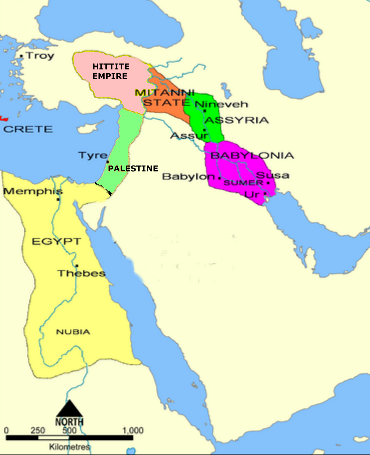

Ασ- names
- Ἀσά
-
- Meaning: Asa
- Note: Asa: Son of Abijah, grandson of Rehoboam (1Kings 15:8)
- Note: Eshtaol: City in the territory of Dan (Josh 19:41). LXX breaks up into 2 words: Asa + cities
- Note: Ain: Levite city in territory of Simeon (Josh 21:16)
- Note: In 2Sam 8:17, LXX names Asa as David's scribe but (Seraiah)
- Note: Agee: father of Samaia (2Sam 23:11)
- Ἀσαβαδμά
-
- Meaning: Hashbadana
- Note: One who stood with Ezra (Neh 8:4)
- Ἀσαβάλ
-
- Meaning: Esh-Baal
- Note: Son of Saul (1Chron 8:33)
- Ἀσαβανία
-
- Meaning: Hashabniah
- Note: Father of Hattush (Neh 3:10)
- Ἀσαβδανά
-
- Meaning: Hashbadana
- Note: One who stood with Ezra (Neh 8:4)
- Ἀσαβία, Ἀσαβίᾳ
-
- Meaning: Hashabiah
- Note: Hashabiah: descendant of Merari and father of Azrikam (1Chron 6:45; 9:14)
- Note: Hashabiah: son of Jeduthun (1Chron 25:3)
- Note: Hashabiah: A leader of the priests (Ezra 8:24)
- Note: Malchijah: son of Parosh who promised to put away his pagan wife (Ezra 10:25)
- Note: Hashabiah: son of Mattaniah and father of Bani (Neh 11:22)
- Note: (Neh 11:15)
- Note: Hashabiah: Hebronite chief of a clan of warriors (1Chron 26:30)
- Note: Hashabiah: Levite who was a ruler (1Chron 27:17)
- Note: Hashabiah: One of the Levite chiefs in the time of Josiah (2Chron 35:9)
- Note: Hashabiah: Leader of the twelfth band of musicians who served in the sanctuary (1Chron 25:19)
- Ἁσαβίας
-
- Parse: Noun: Nom Sing Masc
- Meaning: Hashabiah
- Note: Captain over thousands who gave animals to the Levites for the Passover (1Esdras 1:9)
- Note: the head of a priestly house in the days of Joiakim (Neh 12:21)
- Forms:
- Ἁσαδιά, Ἀσαδία
-
- Meaning: Hasadiah
- Note: Son of Zerubbabel (1Chron 3:20)
- Ἁσαδίας
-
- Parse: Noun: Nom Sing Masc
- Meaning: Hasadiah
- Note: Son of Hilkiah and father of Zedekiah; ancestor of Baruch (Baruch 1:1)
- Forms:
- Ἀσαήλ
-
- Meaning: Asahel
- Note: youngest son of Zeruiah, David's sister (2Sam 2:18)
- Note: Father of Jonathan (Ezra 10:15)
- Note: Levite under Cononiah to collect offerings (2Chron 31:13)
- Ἀσαηλός
-
- Meaning: Sheal, Asaelus
- Note: Mani's descendant who had married a foreign wife (1Esdras 9:30)
- Ἀσαία, Ἀσαΐα, Ἀσαΐᾳ
-
- Meaning: Asaiah
- Note: Asaiah: Descendant of Simeon (1Chron 4:36)
- Note: Asaiah: A Shilonite (1Chron 9:5)
- Note: Asaiah: chief of Merari (1Chron 15:6)
- Ἀσαΐαν
-
- Meaning: Asaiah
- Note: Asaiah: Chief among the Levites (1Chron 15:11)
- Ἀσαίας, Ἀσαΐας
-
- Parse: Noun: Nom Sing Masc
- Meaning: Asaiah, Asaias
- Note: Asaias: Annan's descendant who had married a foreign wife (1Esdras 9:32)
- Note: Asaiah: Servant of king Josiah (2Kings 22:12)
- Forms:
- Ἀσαίᾳ Noun: Dat Sing Masc
- Ἀσάμ
-
- Meaning: Hashem
- Note: One of David's mighty warriors (1Chron 11:34)
- Ἀσάν
-
- Meaning: Ashan
- Note: City in the territory of the tribe of Simeon (Josh 19:7)
- Ἀσανά
-
- Meaning: Asana
- Note: Head of family of those who came out of captivity (1Esdras 5:31)
- Note: Head of family who built the Fish Gate (Neh 3:3)
- Ἀσάρ
-
- Meaning: Ezer
- Note: Son of Seir the Horite (Gen 36:21)
- Ἀσαρά
-
- Meaning: Asara
- Note: Head of family of those who came out of captivity (1Esdras 5:31)
- Ἀσαραδδών
-
- Meaning: Esarhaddon
- Note: Son of Sennacherib, king of Assyria (Ezra 4:2)
- Ἀσαραί
-
- Meaning: Hezrai
- Note: One of David's mighty men (2Sam 23:35)
- Ἀσαρημώθ
-
- Meaning: Asaremoth
- Note: Transliteration of which means the fields, not a proper noun (Jer 31:40)
- Ἀσαρμώθ
-
- Meaning: Hazarmaveth
- Note: Son of Joktan (Gen 10:26)
- Ἀσαρσουλά
-
- Meaning: Hazar-Shual
- Note: City in the territory of Judah (Josh 15:28)
- Ἀσάς
-
- Meaning: Ziz
- Note: A pass in the wilderness of Judea (2Chron 20:16)
- Ἀσασανθαμάρ, Ἀσασὰν-Θαμάρ, Ἀσασάν
- Ἀσασονθαμάρ
-
- Meaning: Hazezon Tamar
- Note: Original name of the place that was later called Engedi located on the west shore of the Dead Sea (Gen 14:7; 2Chron 20:2)
- Ἀσάφ
-
- Meaning: Asaph
- Note: Ancestor of temple singers (Ps 49: 1Esdras 1:15)
- Note: Keeper of the king's forest (Neh 2:8)
- Note: Son of Berachiah (1Chron 6:39)
- Note: Father of Zichri (1Chron 9:15)
- Ἀσβάν
-
- Meaning: Eshban
- Note: Son of Dishon (Gen 36:26)
- Ἀσβανία
-
- Meaning: Hashabniah
- Note: Father of Hattush (Neh 3:10)
- Ἀσβασαρέθ
-
- Meaning: Azbarareth, Asbasareth
- Note: (1Esdras 5:66)
- Ἀσβήλ
-
- Meaning: Ashbel
- Note: Son of Benjamin (Gen 46:21)
- Ἀσβίτης
-
- Parse: Noun: Nom Sing Masc
- Meaning: Ahasbai
- Note: Father of Eliphelet, son of the Maachathite (2Sam 23:34)
- Forms:
- Ἀσγάδ
-
- Meaning: Azgad, Sadas
- Note: Ancestor of 3322 people who were led out of captivity (1Esdras 5:13)
- Note: One of the leaders of the people who endorsed Nehemiah's covenant (Neh 10:16)
- Ἀσγάθ
-
- Meaning: Asgath
- Note: Head of men whom Esdras gathered (1Esdras 8:38)
- Ἀσδώδ
-
- Meaning: Ashdod
- Note: City in the territory of Judah (Josh 15:46)
- Ἀσεβηβίας
-
- Parse: Noun: Nom Sing Masc
- Meaning: Asebebia
- Note: Skilful man who helped Esdras (1Esdras 8:46)
- Forms:
- Ἀσεβί
-
- Meaning: Hashabiah
- Note: Son of Amaziah and father of Malluch (1Chron 6:45)
- Ἀσεβία
-
- Meaning: Hashabiah
- Note: Wise man under Ezra (Ezra 8:19)
- Ἁσεβίας, Ἀσεβίας
-
- Parse: Noun: Nom Sing Masc
- Meaning: Asebia, Hashabiah
- Note: One of the men who performed the function of a priest in Jerusalem (1Esdras 8:47; Neh 10:11)
- Forms:
- Ἀσεβωείμ
-
- Meaning: Zebaim
- Note: Servants of Solomon who came out of Babylon with Zerubbabel (Ezra 2:57)
- Ἀσεβών
-
- Meaning: Ezbon
- Note: Son of Bela (1Chron 7:7)
- Ἀσεδέκ
-
- Meaning: Asedec
- Note: (Isa 19:18)
- Ἀσεδώθ
-
- Meaning: Ashdod
- Note: Philistine city about midway between Gaza and Joppa, and 5 km from the Mediterranean
- Ἀσειμώθ
-
- Meaning: Jeshimoth
- Note: Beth-Jeshimoth: town near Abel-shittim, east of Jordan, in the desert of Moab (Josh 12:3)
- Ἀσέμ
-
- Meaning: Ezem, Hashum
- Note: Ezem: City in the territory of Judah (Josh 15:29)
- Note: Hashum: Leader who escorted 223 out of captivity (Ezra 2:19)
- Ἀσεμωνά
-
- Meaning: Azmon
- Note: Place on the SW border of Israel (Num 34:4)
- Ἀσέν
-
- Meaning: Asen
- Note: Neh 7:24
- Ἀσενά
-
- Meaning: Asnah
- Note: Family of Nethinim who came out of Babylon with Zerubbabel (Ezra 2:50)
- Ἀσεννά
-
- Meaning: Ashnah
- Note: City in the territory of Judah (Josh 15:43)
- Ἁσενναῖος
-
- Parse: Noun: Nom Sing Masc
- Meaning: Sinite
- Note: Descendant of Canaan and demonym of Sin near Arka (Gen 10:17; 1Chron 1:15)
- Forms:
- Ἀσενναφάρ
-
- Meaning: Osnappar, Asennaphar
- Note: Name of Ashurbanipal or one of the sub-kings of Assyria who repopulated Samaria after removing the Jews (Ezra 4:10)
- Ἀσεννέθ
-
- Meaning: Asenath
- Note: Daughter of Potiphar and wife of Joseph (Gen 41:45)
- Ἀσεργαδδά
-
- Meaning: Hazar-Gaddah
- Note: City in the territory of Judah (Josh 15:27)
- Ἀσεριήλ
-
- Meaning: Asriel
- Note: Syrian concubine of Manasseh (1Chron 7:14)
- Ἀσερών
-
- Meaning: Hezron
- Note: City in the territory of Judah, also known as Hazor (Josh 15:25)
- Ἀσερναΐν
-
- Meaning: Hazar Enan
- Note: Village of Enan: place on the NE frontier of Palestine (Num 34:9)
- Ἀσερσουάλ
-
- Meaning: Hazar Shual
- Note: City in the territory of the tribe of Simeon (Josh 19:3)
- Ἀσερσουσίμ
-
- Meaning: Hazar Susah
- Note: City in the territory of the tribe of Simeon (Josh 19:5)
- Ἀσεφηράθ
-
- Meaning: Sophereth
- Note: Servants of Solomon who came out of Babylon with Zerubbabel (Ezra 2:55)
- Ἀσεών-Γαβέρ
-
- Meaning: Ezion-Geber
- Note: Ancient city and harbour at the north-east end of the Elanitic branch of the Red Sea, the Gulf of Akabah, near Elath
- Concord: 1Kings 22:48
- Ἀσήβ
-
- Meaning: Asher
- Note: Son of Jacob and Zilpah (Gen 30:13)
- Note: The territory of Asher (Josh 17:10)
- Ἀσηδώθ
-
- Meaning: Ashdod
- Note: City assigned to the tribe of Judah (Josh 15:46)
- Ἀσήλ
-
- Meaning: Uzal
- Note: Uzal: Place where merchandise was traded (Ezek 27:19)
- Note: Eshek: son of Eleasah and brother of Azel (1Chron 8:39)
- Ἀσήμ
-
- Meaning: Hashum
- Note: One of the leaders of the people who endorsed Nehemiah's covenant (Neh 10:19)
- Ἀσήρ
-
- Meaning: Asher
- Note: Son of Jacob and Zilpah (Gen 30:13)
- Ἀσηρώθ
-
- Meaning: Hazeroth
- Note: Hazeroth: An encampment of the Israelites in Sinai (Num 11:35)
- Note: Ashtaroth: a city of Bashan, in the kingdom of Og (1Chron 6:71)
- Ἀσθηράν
-
- Meaning: Haahashtari
- Note: Son of Ashhur and Naarah (1Chron 4:6)
- Ἀσία
-
- Parse: Noun: Nom Sing Fem
- Meaning: Asia (i.e., Asia Minor)
- Forms:
- Ἀσίᾳ Noun: Dat Sing Fem
- Ἀσίαν Noun: Acc Sing Fem
- Ἀσίας Noun: Gen Sing Fem
- Ἀσιανός
-
- Parse: Noun: Nom Sing Masc
- Meaning: Asian
- Note: belonging to Asia (Minor) (Acts 20:4)
- Forms:
- Ἀσιάρχης
-
- Parse: Noun: Nom Sing Masc
- Meaning: Asiarch
- Note: An officer in Asia (Minor)
- Note: Philip the Asiarch (Mart-Pol 12:2)
- Forms:
- Ἀσιβίας
-
- Meaning: Asibias
- Note: Parosh's descendant who had married a foreign wife (1Esdras 9:26)
- Ἁσιδαῖοι
-
- Parse: Noun: Nom Plur Masc
- Meaning: Hasideans
- Note: A band of zealous and devoted men who fought to maintain Jewish orthodoxy against the influence of Greek culture and religion (1Macc 2:42)
- Forms:
- Ἀσιδών
-
- Meaning: Sharon
- Note: level tract extending from the Mediterranean to the hill country to the west of Jerusalem (1Chron 27:29)
- Note:
- Ἀσιεδώθ
-
- Meaning: Ashdod
- Note: City assigned to the tribe of Judah (Josh 15:47)
- Ἀσιήλ
-
- Meaning: Asiēl
- Note: Father of Seraiah
- Concord:
1Chron 4:35; Num 26:48; Gen 46:24; 2Chron 17:8
- Ἀσιηλί
-
- Meaning: Asiel, Asahel, Jaasiel, Jahzeel, Asielite
- Note: Asiel: father of Seraiah (1Chron 4:35)
- Note: Asahel: One of the priests Jehoshaphat sent out to teach in the cities (2Chron 17:7,8)
- Note: Asielite: Family of the descendants of Asiel (Tobit 1:1)
- Note: Jaasiel: son of Abner (1Chron 27:21)
- Note: Jahzeel: son of Naphtali (Gen 46:24; Num 26:48)
- Note: Asiel: descendant of Simeon (1Chron 4:35)
- Ἀσίθ
-
- Meaning: Ashvath
- Note: Son of Japhlet (1Chron 7:33)
- Ἀσιμάθ
-
- Meaning: Ashima
- Note: The god of Hamath (2Kings 17:30)
- Ἀσιμούθ
-
- Meaning: Jeshimoth
- Note: Beth-Jeshimoth: town near Abel-shittim, east of Jordan, in the desert of Moab (Ezek 25:9)
- Ἀσιμώθ
-
- Meaning: Jeshimoth
- Note: Beth-Jeshimoth: town near Abel-shittim, east of Jordan, in the desert of Moab (Josh 12:3)
- Ἀσινοῦ
-
- Meaning: Senaah
- Note: Hassenuah: father of Hodaviah (1Chron 9:7)
- Ἀσίρ
-
- Meaning: Assir
- Note: Assir: Son of Korah and father of Elkanah (1Chron 6:22)
- Note: Assir: Son of Jeconiah (1Chron 3:17)
- Note: Assir: Son of Ebiasaph and father of Tahath (1Chron 6:24)
- Ἀσιφά
-
- Meaning: Asipha
- Note: Asipha: Head of family of temple servants (1Esdras 5:29)
- Note: Hasupha: Family of Nethinim who returned from Babylonian captivity (Neh 7:46)
- Ἀσκαλών, Ἀσκάλων
-
- Parse: Noun: Nom Sing Fem
- Meaning: Ashkelon
- Note: Philistine capital on the shore of the Mediterranean
- Forms:
- Ἀσκαλωνίτης
-
- Parse: Noun: Nom Sing Masc
- Meaning: Ashkelonian, Ashkelonite
- Note: Philistine people of Ashkelon (Josh 13:3)
- Forms:
- Ἀσμά
-
- Meaning: Shemaah
- Note: Father of Ahiezer and Joash (1Chron 12:3)
- Ἀσμοδαῖος
-
- Parse: Noun: Nom Sing Masc
- Meaning: Asmodeus
- Note: A wicked demon (Tobit 3:8)
- Forms:
- Ἀσμόδαυς
-
- Parse: Noun: Nom Sing Masc
- Meaning: Asmodeus
- Note: A wicked demon (Tobit 3:8)
- Forms:
- Ἀσμώθ
-
- Meaning: Azmaveth
- Note: Original residents who came out of captivity (Ezra 2:24)
- Note: Son of Jehoaddah (1Chron 8:36)
- Note: Father of Jeziel and Pelet (1Chron 12:3)
- Note: Son of Adiel (1Chron 27:25)
- Ἀσνά
-
- Meaning: Ashnah
- Note: City in the territory of Judah (Josh 15:33)
- Ἀσοβαέσδ
-
- Meaning: Jushab-Hesed
- Note: Son of Zerubbabel (1Chron 3:20)
- Ἀσοβέδ
-
- Meaning: Jushabhesed
- Note: Son of Zerubbabel
- Concord:
1Chron 3:20
- Ἀσόμ, Ἁσόμ
-
- Meaning: Ezem, Husham, Hushim, Asom
- Note: Ezem: city assigned to the tribe of Judah (Josh 15:29)
- Note: Ezem: city in the territory of the tribe of Simeon (Josh 19:3)
- Note: Hashum: Head of a family of men who had foreign wives (1Esdras 9:33)
- Note: Hasom/Husham: King of Edom from Timanite country (Gen 36:34; Job 42:17d)
- Note: Husim: Son of Dan (Gen 46:23)
- Note: Ozem: sixth son of Jesse (1Chron 2:15)
- Note: Ozem: Son of Jerahmeel (1Chron 2:25)
- Ἀσόρ
-
- Meaning: Hazor
- Note: City in the territory of Naphtali (Josh 19:37)
- Ἀσορδάν
-
- Meaning: Esarhaddon
- Note: The son of Sennacherib who reigned after him (2Kings 19:37)
- Ἀσοριωναίν
-
- Meaning: Hazor Ithnan
- Note: City assigned to the tribe of Judah (Josh 15:23); some interpret as two different places
- Ἀσούβ
-
- Meaning: Hasshub
- Note: Hasshub: One of the leaders of the people who endorsed Nehemiah's covenant (Neh 3:23; 10:24)
- Note: Hashub: son of Pahath-Moab (Neh 3:11)
- Note: Hasshub: son of Azrikam and father of Shemaiah (Neh 11:15)
- Ἁσουβέ, Ἀσουβέ
-
- Meaning: Hashubah
- Note: Son of Zerubbabel (1Chron 3:20)
- Ἀσούηρος
-
- Parse: Noun: Nom Sing Masc
- Meaning: Ahasuerus
- Note: Father of Darius the Mede. Probably Cyaxares I king of Media (Dan 9:1)
- Note: Son and successor of Cyrus in BC 529 (Ezra 4:6)
- Note: Son of Darius Hystaspes mentioned in Esther; probably Xerxes. In LXX he is called Artaxerxes
- Forms:
- Ἀσουΐα
-
- Meaning: Sia
- Note: family of Nethinim who came out of Babylon with Zerubbabel
- Concord: Neh 7:47
- Ἀσούμ
-
- Meaning: Ηασηθμ
- Note: Leader who escorted 223 out of captivity
- Concord: Ezra 2:19
- Ἀσούρ
-
- Meaning: Asour
- Note: Asour: Head of family of those who came out of captivity (1Esdras 5:31)
- Note: Asour: Ancestor of Abraham (1Chron 1:24)
- Ἀσουφά
-
- Meaning: Hasupha
- Note: Family of Nethinim who came out of Babylon with Zerubbabel (Ezra 2:43)
- Ἀσουφέ
-
- Meaning: Hasupha
- Note: Family of Nethinim who came out of Babylon with Zerubbabel (Ezra 2:43)
- Ἀσραΐ
-
- Meaning: Hezrai
- Note: One of David's 30 men, a Carmelite
- Concord: 2Sam 23:35
- Ἀσριήλ
-
- Meaning: Azareel
- Note: Leader of the eleventh band of musicians who served in the sanctuary
- Concord: 1Chron 25:18
- Ἀσρώμ
-
- Meaning: Hezron
- Note: Son of Reuben
- Concord:
1Chron 5:3
- Ἀσρών
-
- Meaning: Hezrοn
- Note: Son of Perez; grandson of Judah
- Note: Son of Reuben (Gen 46:9)
- Note: A plain in the south of Judah, west of Kadesh-barnea (Josh 15:3)
- Ἀσρωνί
-
- Meaning: Hezronite
- Note: Descendants of Hezrοn (Num 26:6)
- Ἀσσά
-
- Meaning: Ashnah
- Note: City assigned to the tribe of Judah (Josh 15:33)
- Ἀσσαθών
-
- Meaning: Eshton
- Note: Son of Mehir (1Chron 4:11)
- Ἀσσαλιμώθ
-
- Meaning: Assalimoth
- Note: Son of Josaphias (1Esdras 8:36)
- Ἀσσάρ
-
- Meaning: Seir
- Note: Mountain range on the east side of the Arabah near Akabah (Josh 15:10)
- Ἀσσαρές
-
- Meaning: Seir
- Note: Mountain range on the east side of the Arabah near Akabah (Josh 15:10)
- Ἀσσαρί
-
- Meaning: Edrei, Assari
- Note: City in the territory of Naphtali (Josh 19:37)
- Ἀσσαφιώθ
-
- Meaning: Assaphioth
- Note: Head of family of those who came out of captivity (1Esdras 5:33)
- Ἀσσήρ
-
- Meaning: Asher
- Note: Tobit seems to be referring to a town rather than the territory of Asher (Tobit 1:2)
- Ἀσείρ
-
- Meaning: Assir
- Note: Son of Korah
- Concord: Ex 6:24
- Ἀσσεναφάρ
-
- Meaning: Asnappar
- Note: the person who settled the Cutheans in the cities of Samaria. He was probably a general of Esarhaddon. (B.C. 712.)
- Concord: Ezra 4:10
- Ἆσσος, Ἄσσος
-
- Parse: Noun: Nom Sing Fem
- Meaning: Assos
- Note: City of Mysia (Acts 20:13)
- Forms:
- Ἆσσον, Ἄσσον Noun: Acc Sing Fem
- Ἀσσούρ
-
- Meaning: Assyria, Assyrian, Asshur, Assur
- Note: Assyria: Name derived from the city Asshur on the Tigris; originally a colony of Babylonia
- Note: Assyrian: Native of Assyria
- Note: Asshur: Son of Shem (Gen 10:11,22; 1Chron 1:17)
- Ἀσσουήρου
-
- Meaning: Ahasuerus
- Note: Son and successor of Cyrus in BC 529
- Concord: Ezra 4:6
- Ἀσσουριίμ, Ἀσσουριείμ
-
- Meaning: Asshurim
- Note: Son of Dedan (Gen 25:3)
- Ἀσσυῆρος
-
- Parse: Noun: Nom Sing Masc
- Meaning: Assyeros
- Forms:

Assyria
- Ἀσσυρία
-
- Parse: Noun: Nom Sing Fem
- Meaning: Assyria
- Note: Nation north of Babylonia in Mesopotamia
- Forms:
- Ἀσσύριος
-
- Parse: Noun: Nom Sing Masc
- Meaning: Assyrian
- Note: Natives of Assyria (Amos 3:9; Hosea 8:13; Tobit 14:4)
- Forms:
- Αστάος
-
- Parse: Noun: Nom Sing Masc
- Meaning: Astaus
- Forms:
- Ἀστάρτη
-
- Parse: Noun: Nom Sing Fem
- Meaning: Astarte
- Note: supreme Phoenician goddess of Canaan and the female counterpart of Baal (Judg 2:13)
- Forms:
- Ἀσταρτεῖον
-
- Meaning: Ashtoreths
- Note: Temple containing a statue of Astarte; Ashtoreth: supreme goddess of Canaan and female counterpart of Baal (1Sam 31:10)
- Ἀσταρώθ
-
- Meaning: Ashtaroth
- Note: Ashteroth Karnaim: City of Og, king of Bashan (Gen 14:5)
- Note: Ashtoreth: supreme goddess of Canaan and female counterpart of Baal (Judg 10:6)
- Ἀσταρωθί
-
- Meaning: Ashterathite
- Note: native of Ashtaroth (1Chron 11:44)
- Ἀστατωθί
-
- Meaning: Hushathite
- Note: Family name of Sibbechai (2Sam 21:18)
- Ἀσταώλ
-
- Meaning: Eshtaol
- Note: City assigned to the tribe of Judah (Josh 15:33)
- Ἀστίν
-
- Meaning: Vashti
- Note: Queen married to Ahasuerus (Est 1:9)
- Ἀστυάγης
-
- Parse: Noun: Nom Sing Masc
- Meaning: Astyages
- Note: Son and successor of Cyaxares; last king of the Medes (BC 595-560) who was conquered by Cyrus (Bel and Dragon 1)
- Ἀσυβήρ
-
- Meaning: Ashbel
- Note: Son of Benjamin (Num 26:42)
- Ἀσυβηρί
-
- Meaning: Ashbelite
- Note: Descendant of Ashbel (Num 26:42)
- Ἀσυηρός
-
- Parse: Noun: Nom Sing Masc
- Meaning: Ahasuerus
- Note: King of Persia and Media (Titus 14:15)
- Ἀσύγκριτος
-
- Parse: Noun: Nom Sing Masc
- Meaning: Asyncritus
- Note: A Christian in Rome to whom Paul sends greetings (Rom 16:14)
- Forms:
- Ἀσφά
-
- Meaning: Hashupha
- Note: Family of Nethinim who returned from Babylonian captivity
- Concord: Neh 7:46
- Ἀσφανέζ
-
- Meaning: Ashpenaz
- Note: master of the eunuchs of Nebuchadnezzar (Dan 1:3)
- Ἀσφάρ
-
- Meaning: Asphar
- Note: A pool in the wilderness of Tekoa where Jonathan and Simon camped when fleeing from Bacchides (1Macc 9:33)
- Ἀσφαράσος
-
- Parse: Noun: Nom Sing Masc
- Meaning: Aspharasus
- Note: One of the men who guided those who came with Zorobabel out of Babylon (1Esdras 5:8)
- Forms:
- Ἀσχά
-
- Parse: Noun: Nom Sing Fem
- Meaning: Achsah
- Note: Daughter of Caleb; wife of Othniel (Judg 1:12)
- Forms:
- Ἀσχαζί
-
- Meaning: Achzib
- Note: A Phoenician city on the Mediterranean about 13 km north of Accho (Judg 1:31)
- Ἀσχανάζ
-
- Meaning: Ashkenaz
- Note: Son of Gomer (Gen 10:3; 1Chron 1:6)
- Ἀσχαναζαῖος
-
- Parse: Noun: Nom Sing Masc
- Meaning: Ashkenazite
- Note: Descendant of one of the sons of Gomer (Jer 51:27)
- Forms:
- Ἀσχώδ
-
- Meaning: Ashhur
- Note: Son of Hezron and Abijah (1Chron 2:24)
- Ἀσώβ
-
- Meaning: Hasshub
- Note: Son of Azrikam and father of Shemaiah (1Chron 9:14)
- Ἀσωθί
-
- Meaning: Hushathite, Asothite
- Note: Interestingly the LXX transliterates meaning Hushathite as Ἀσωθί in 1Chron 11:29; Οὐσαθὶ in 1Chron 20:4; and Ἰσαθὶ in 1Chron 27:11
- Ἁσωθίτης
-
- Parse: Noun: Nom Sing Masc
- Meaning: Hushathite
- Note: Family name of Mebunnai (a person not mentioned in LXX) (2Sam 23:27)
- Forms:
- Ἀσώμ
-
- Meaning: Husham, Asom, Hashum
- Note: Hasom/Husham: King of Edom from Timanite country
- Concord: Gen 36:34; Job 42:17d
- Note: Asom: Governor of the country of Thaeman
- Concord: Job 42:17d
- Note: Hashum: one of those who stood with Ezra
- Concord: Neh 8:4
- Ἀσωναῖος
-
- Parse: Noun: Nom Sing Masc
- Meaning: Eznite
- Note: Family name of Adino (2Sam 23:8)
- Ἀσώρ
-
- Meaning: Hazor, Jagur
- Note: Hazor: city in the territory of Judah also known as Hezron (Josh 15:25)
- Note: Jagur: A city within the territory of Judah (Josh 15:21)
- Note: City in the territory of Naphtali (Josh 19:36)
- Ἀσωρών
-
- Meaning: Hezron
- Note: A plain in the south of Judah, west of Kadesh-barnea (Josh 15:3)